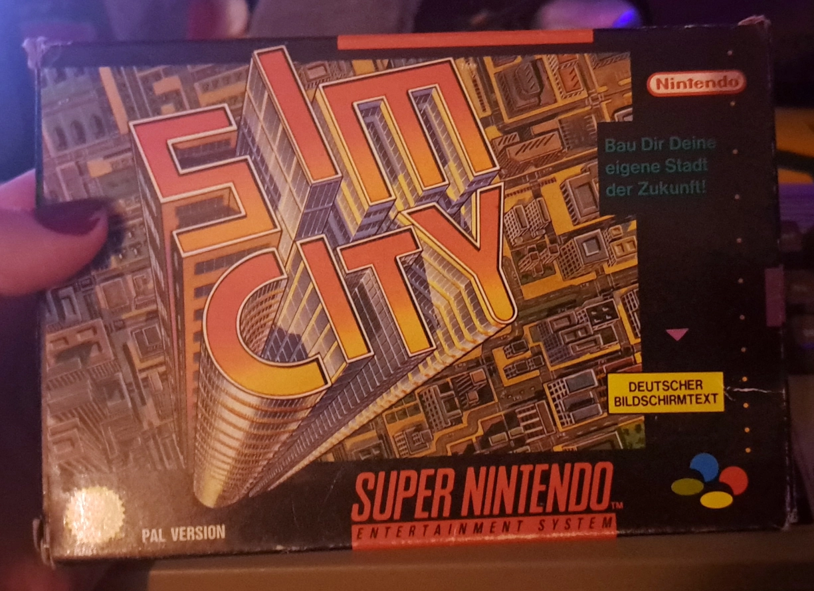
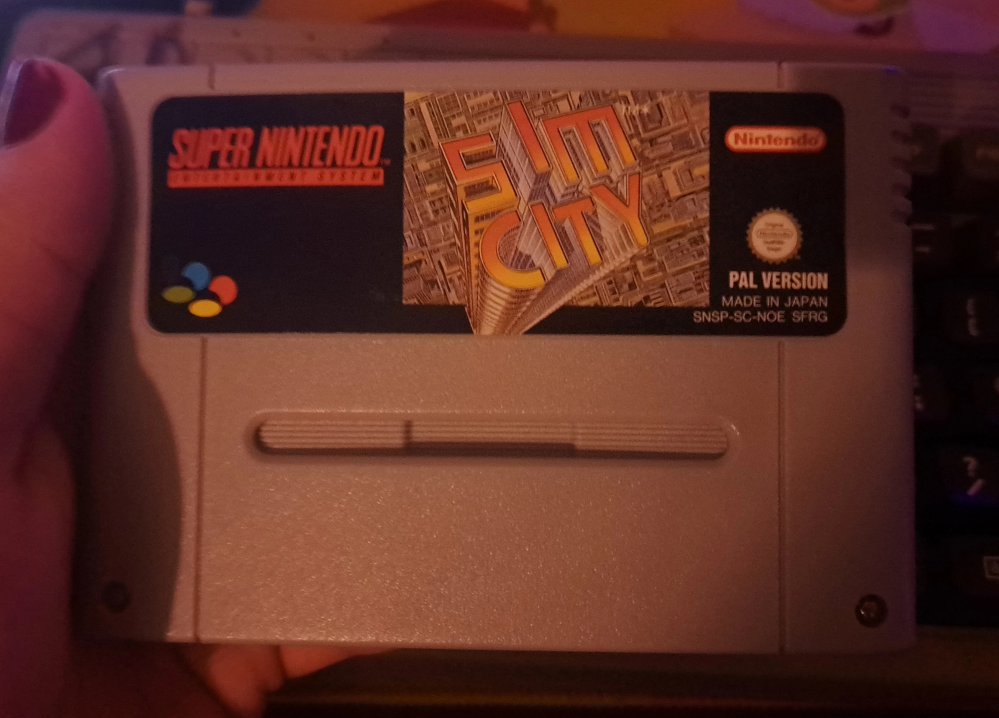
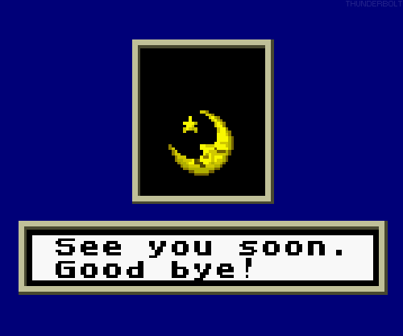

SimCity (SNES)
Developed by: Maxis, Nintendo
Published by: Nintendo
Platforms: SNES, Wii (Virtual Console)
Released in: 1991, 2006 (Virtual Console)
Also owned on: Wii Virtual Console


SNES Box Art

European cartridge
SimCity (SNES)
Developed by: Maxis, Nintendo
Published by: Nintendo
Platforms: SNES, Wii (Virtual Console)
Released in: 1991, 2006 (Virtual Console)
Also owned on: Wii Virtual Console
When talking about simulation games or city builders, SimCity is a game series which is always remembered very fondly. For a good reason ! It was originaly developed by Will Wright in 1985 after being inspired by the level editor of Raid on Bungeling Bay, a game Wright had been working on at that time. Four years later, SimCity would finally be released in 1989 by Maxis and it paved the way for city builders and simulation games alike !
Nowerdays when you think of the term "city builders", you'd probably think of other games in the genre like Cities Skylines and i wouldn't blame you ! Cities Skylines is an amazing game !
After EA bought Maxis, the SimCity series went downhill fast ! I'm still asking myself the question who the hell thought SimCity 2013 was a good idea... What EA did with Maxis shall never be forgiven.
The SimCity games got ported to many platforms over the years: Mac, PS1, GBA, Sega Saturn and even the 64DD, which got an exclusive first person camera mode !
And in 1991 the original SimCity game got ported over to the SNES, just in time for the launch of the SNES in North America !
The game starts with you in the role as a mayor, choosing a name for your town and picking a blank template from... 1000 different options !? Loading one of these templates can take a good few seconds, so you'd be sitting there for a couple of hours if you were to actually go through all of the possible options LMAO
Your job as the mayor is to build Residential, Commercial and Industrial Zones all the while providing crutial infrastructure like streets or public transport to minimize the risk of traffic jams. You'll also need to build power plants to provide your city with electricity, while also keeping an eye out on polution, crime or the risk of fire !
If you do your job well as the mayor, your city will steadilly grow larger and larger. From a Small Village to a City and maybe even one day to a Megalopolis !
As the mayor you even have the ability to start natural disasters like tornados, floods or even a godzilla attack, which was changed to a bowser attack here in the SNES version ! (This port was co-developed by Nintendo after all !)
So basically, you're not just a mayor ! You're a god ! You can do whatever you want with your residents !
SimCity is micromanagement heaven ! If your City reaches 500.000 residents, your City turns into a Megalopolis and you unlock a Mario Statue which you can place in your City !
Watching your city grow is a zen-like experience ! I first played this game on the Wii's Virtual Console a while back and i remember having a lot of fun building my own cities, only to run a tornado through downtown a few moments later !
I personally enjoy this game a lot ! SimCity on the SNES may be a bit simple nowerdays, compared to later games in the series like SimCity 2000 or 3000 which both offer way more customizability, but i think this game is definitely still worth checking out if you're a big city builder fan !
